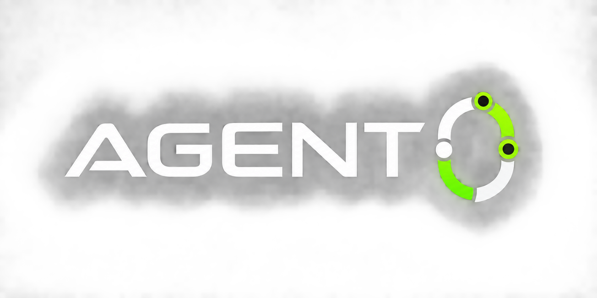

ILLUSTRATIVE EXAMPLE · NOT A LIVE CHECK
Sample claim
“Schools in Nyeri County will remain closed tomorrow.”
QuestionClaim · Public site example
For the moment before you publish
before you publish.
Assume nothing. Follow the evidence.
Start with a claim
Sample claim
“Schools in Nyeri County will remain closed tomorrow.”
Follow the source
ILLUSTRATIVE EXAMPLE · NOT A LIVE CHECK
Claim in review
Official sources
No matching announcement found
Independent reporting
Some reports repeat the same notice
Image origin
Original publisher not established
A missing source does not make a claim false.
AI investigates. Humans decide.

Explore Agent 0